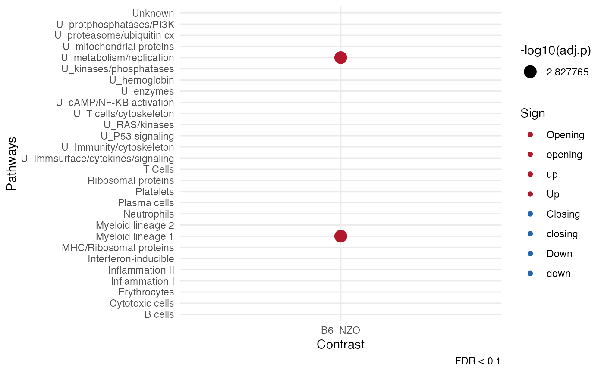

Given the results from `cinaR` it produces dot plots for enrichment analyses.
Examples
# \donttest{
library(cinaR)
data(atac_seq_consensus_bm) # calls 'bed'
# a vector for comparing the examples
contrasts <- sapply(strsplit(colnames(bed), split = "-", fixed = TRUE),
function(x){x[1]})[4:25]
results <- cinaR(bed, contrasts, reference.genome = "mm10")
#> >> Experiment type: ATAC-Seq
#> >> Matrix is filtered!
#> >> preparing features information... 2026-02-02 11:43:24
#> >> Using Genome: mm10 ...
#> >> identifying nearest features... 2026-02-02 11:43:24
#> >> calculating distance from peak to TSS... 2026-02-02 11:43:24
#> >> assigning genomic annotation... 2026-02-02 11:43:24
#> >> Using Genome: mm10 ...
#> >> Using Genome: mm10 ...
#> >> assigning chromosome lengths 2026-02-02 11:43:26
#> >> done... 2026-02-02 11:43:26
#> >> Method: edgeR
#> FDR:0.05& abs(logFC)<0
#> >> Estimating dispersion...
#> >> Fitting GLM...
#> >> DA peaks are found!
#> >> No `geneset` is specified so immune modules (Chaussabel, 2008) will be used!
#> >> enrichment.method` is not selected. Hyper-geometric p-value (HPEA) will be used!
#> >> Mice gene symbols are converted to human symbols!
#> >> Enrichment results are ready...
#> >> Done!
dot_plot(results)
#> Warning: Removed 54 rows containing missing values or values outside the scale range
#> (`geom_point()`).

# }